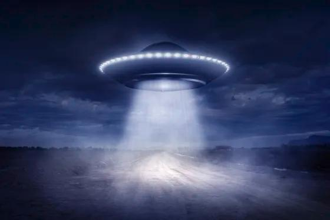

Corpos celestes
Por: Pedro Soares & Leonardo Lima
Existem diversos tipos diferentes de corpos celestes no espaço, alguns sendo extremamente peculiares.
O universo é repleto de fenômenos fascinantes, desde de corpos celestes que viajam pelo vácuo até estrelas que desafiam a nossa compreensão do tempo e da física.
Confira alguns exemplos de corpos celestes impressionantes:
.Estrela "Matusalém": Localizada a cerca de 190 anos-luz da terra, sendo considerada mais velha que o próprio universo, podendo ter 14,5 bilhões de anos
.Planetas que flutuam: Saturno é o unico planeta cuja densidade é menor que a da água, se fosse possível criar uma piscina de seu tamanho, ele flutuaria nela como uma bola de isopor.
Vida fora da terra.

Apesar de não existir provas concretas, ciêntistas concordam que a probabilidade de vida fora da terra é muito alta, isso se baseia em alguns pilares:
Vida microbiana: Astrobiólogos apontam que a existência de vida unicelular fora da terra é quase uma certeza matemática.
Bioassinaturas: Gases associados à atividades biológicas encontrados em outros planetas.
Buracos Negros
Um buraco negro é uma região do espaço-tempo com um campo gravitacional tão extremo que nada -nem mesmo partículas ou a luz- consegue escapar de seu interior.
Algumas de suas estruturas basicas são:
Horizonte de ventos.
Disco de Acreção.
Singularidade.